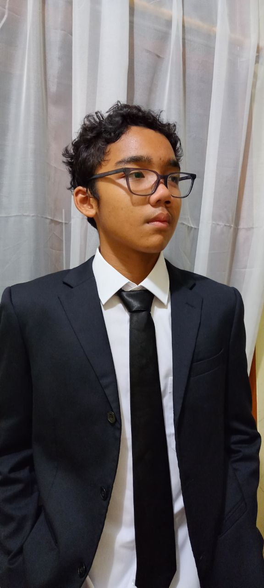

Karya Nyata dari Proses Belajar

Fahmi Arsyad Majid, Kelas 9 Al-Alaa, SMPIT Al-Haraki
Nama saya adalah Fahmi Arsyad Majid. Umur saya 14 tahun. Saat ini saya berada di kelas 9. Saya adalah anak pertama dari 3 bersaudara. Saya juga memiliki makanan kesukaan yaitu bakso, spaghetti, dll. Beberapa hal yang saya sukai adalah saya suka bermain, berenang dan basket.
Saya memiliki beberapa minat yaitu saya suka terhadap matematika dan IPA. Lalu, saya juga punya hobi seperti berenang, bermain game dan bermain basket. Saya juga punya kemampuan yaitu berenang.
Cita-cita saya adalah saya ingin menjadi seorang dokter spesialis jantung karena saya memiliki ketertarikan terhadap jantung secara detail. Dan untuk harapan saya kedepannya adalah saya ingin menjadi seseorang yang lebih disiplin, lebih mandiri dan lebih calm.
Menurut saya, banyak sekali kesan yang saya dapatkan ketika di level 9 ini seperti kegiatan IC yang menyenangkan dan kegiatan HGS yang seru. Pesan saya untuk level 9 ini untuk terus semangat dan terus solid.